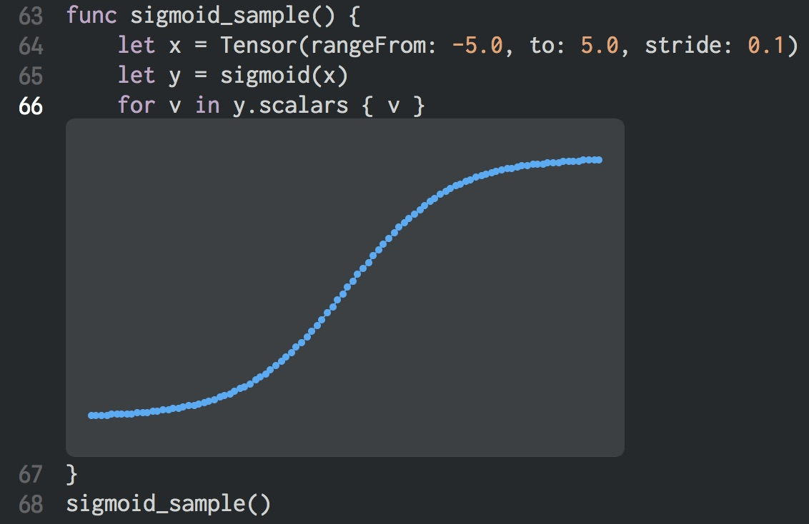
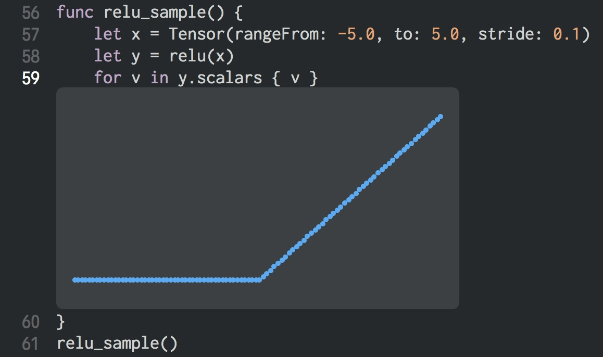

- Sun 03 June 2018
- swift
- mani3
- #swift tensorflow
ゼロから作るDeep Learning の第3章のサンプルコードを Swift for TensorFlow で書いてみただけです。Playground を使ってグラフを書くようにして理解を深めます。
シグモイド関数
func sigmoid_sample() {
let x = Tensor(rangeFrom: -5.0, to: 5.0, stride: 0.1)
let y = sigmoid(x)
for v in y.scalars { v }
}
sigmoid_sample()
Playground 上にグラフを表示するためだけに for v in y.scalars { v } というのを追加してます。
Playground でグラフを表示

ReLU 関数
func relu_sample() {
let x = Tensor(rangeFrom: -5.0, to: 5.0, stride: 0.1)
let y = relu(x)
for v in y.scalars { v }
}
relu_sample()
Playground でグラフを表示

Softmax 関数
活性化関数ではないけど softmax 関数を使ってみる。すでに用意されているので簡単。
func softmax_sample() {
let x = Tensor([0.3, 2.9, 4.0])
let y = softmax(x)
print(y.scalars) /// [0.018211273295547534, 0.24519181293507389, 0.73659691376937853]
print(y.sum()) /// 1.0
}
softmax_sample()
3層のニューラルネットワークのフォワード処理
func forward(input: [Double]) -> [Double] {
let x = Tensor(shape: [1, 2], scalars: input).toDevice()
let w1 = Tensor<Double>([[0.1, 0.3, 0.5], [0.2, 0.4, 0.6]])
let b1 = Tensor<Double>([0.1, 0.2, 0.3])
let w2 = Tensor<Double>([[0.1, 0.4], [0.2, 0.5], [0.3, 0.6]])
let b2 = Tensor<Double>([0.1, 0.2])
let w3 = Tensor<Double>([[0.1, 0.3], [0.2, 0.4]])
let b3 = Tensor<Double>([0.1, 0.2])
let a1 = x.dot(w1) + b1
let z1 = sigmoid(a1)
let a2 = z1.dot(w2) + b2
let z2 = sigmoid(a2)
let y = z2.dot(w3) + b3
return y.scalars
}
print(forward(input: [1.0, 0.5])) /// [0.31682707641102981, 0.69627908986196685]
わざわざ Swift For TensorFlow で書く必要はないけど、Python の matplotlib の代わりに Playground でグラフも表示できるので便利だと思う。
でも、Playground + Swift for TensorFlow が全然動かないのでそれだけがストレス😭